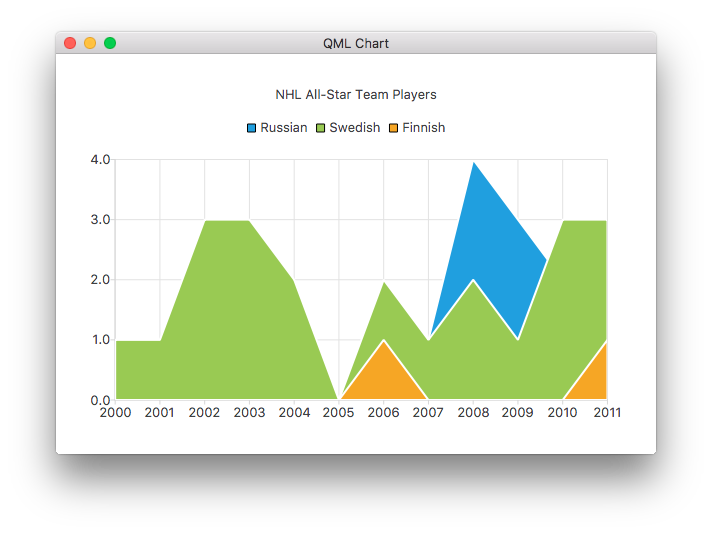

AreaSeries QML Type
Presents data in area charts. More...
| Import Statement: | import QtCharts 2.7 |
| Instantiates: | QAreaSeries |
| Inherits: |
Properties
- axisAngular : AbstractAxis
- axisRadial : AbstractAxis
- axisX : AbstractAxis
- axisXTop : AbstractAxis
- axisY : AbstractAxis
- axisYRight : AbstractAxis
- borderColor : color
- borderWidth : real
- brush : brush
- brushFilename : QString
- color : color
- lowerSeries : LineSeries
- pointLabelsClipping : bool
- pointLabelsColor : font
- pointLabelsFont : font
- pointLabelsFormat : string
- pointLabelsVisible : bool
- upperSeries : LineSeries
Signals
- clicked(point point)
- doubleClicked(point point)
- hovered(point point, bool state)
- pressed(point point)
- released(point point)
Detailed Description
An area series is used to show quantitative data. It is based on a line series, in the way that the area between the boundary lines is emphasized with color. The LineSeries type defines the upper boundary of the area. The area chart is drawn using the bottom of the plot area as the lower boundary by default. Instead of the bottom of the plot area, the lower boundary can be specified by another line. In that case, the AreaSeries should use two LineSeries types.
Note: The terms upper and lower boundary can be misleading in cases where the value of the lower boundary is greater than that of the upper boundary. The main point is that the area between these two boundary lines will be filled.

The following QML shows how to create a simple area chart:
ChartView { title: "NHL All-Star Team Players" anchors.fill: parent antialiasing: true // Define x-axis to be used with the series instead of default one ValueAxis { id: valueAxis min: 2000 max: 2011 tickCount: 12 labelFormat: "%.0f" } AreaSeries { name: "Russian" axisX: valueAxis upperSeries: LineSeries { XYPoint { x: 2000; y: 1 } XYPoint { x: 2001; y: 1 } XYPoint { x: 2002; y: 1 } XYPoint { x: 2003; y: 1 } XYPoint { x: 2004; y: 1 } XYPoint { x: 2005; y: 0 } XYPoint { x: 2006; y: 1 } XYPoint { x: 2007; y: 1 } XYPoint { x: 2008; y: 4 } XYPoint { x: 2009; y: 3 } XYPoint { x: 2010; y: 2 } XYPoint { x: 2011; y: 1 } } }
Note: Adding the same line series to a chart and area series is not supported. The series used as boundary lines should be defined only for the area series.
Property Documentation
axisAngular : AbstractAxis |
The angular axis used for the series, drawn around the polar chart view.
See also axisX and PolarChartView.
axisRadial : AbstractAxis |
The radial axis used for the series, drawn inside the polar chart view.
See also axisY and PolarChartView.
axisX : AbstractAxis |
axisXTop : AbstractAxis |
axisY : AbstractAxis |
The y-axis used for the series. If you leave both axisY and axisYRight undefined, a value axis is created for the series.
See also axisYRight and ValueAxis.
axisYRight : AbstractAxis |
borderColor : color |
Line (pen) color of the series.
borderWidth : real |
The width of the border line. By default, the width is 2.0.
brush : brush |
The brush used to draw to draw the line for this series.
brushFilename : QString |
The name of the file used as a brush image for the series.
color : color |
Fill (brush) color of the series.
lowerSeries : LineSeries |
The lower one of the two line series used to define area series boundaries.
Note: If AreaSeries was constructed without a lowerSeries, this is null.
pointLabelsClipping : bool |
Defines the clipping for data point labels. True by default. The labels on the edge of the plot area are cut when clipping is enabled.
See also pointLabelsVisible.
pointLabelsColor : font |
Defines the color used for data point labels. By default, the color is the color of the brush defined for labels in the theme.
See also pointLabelsFormat.
pointLabelsFont : font |
Defines the font used for data point labels.
See also pointLabelsFormat.
pointLabelsFormat : string |
The format used for showing labels with series points.
See also QAreaSeries::pointLabelsFormat, pointLabelsVisible, pointLabelsFont, and pointLabelsColor.
pointLabelsVisible : bool |
Defines the visibility of data point labels.
See also pointLabelsFormat and pointLabelsClipping.
upperSeries : LineSeries |
The upper one of the two line series used to define area series boundaries.
Signal Documentation
clicked(point point) |
This signal is emitted when the user triggers a press on point by clicking it in an area chart.
The corresponding signal handler is onClicked.
Note: The corresponding handler is onClicked.
See also pressed, released, and doubleClicked.
doubleClicked(point point) |
This signal is emitted when the user hovers the mouse cursor over a series or moves it away from the series. point shows the origin (coordinate) of the hover event. state is true when the cursor hovers over the series and turns false when it moves away from the series.
The corresponding signal handler is onHovered.
Note: The corresponding handler is onHovered.
pressed(point point) |
This signal is emitted when the user presses the point specified by point in an area chart.
The corresponding signal handler is onPressed.
Note: The corresponding handler is onPressed.
See also clicked, released, and doubleClicked.
released(point point) |
This signal is emitted when the user releases a press that was triggered on point in an area chart.
The corresponding signal handler is onReleased.
Note: The corresponding handler is onReleased.
See also pressed, clicked, and doubleClicked.